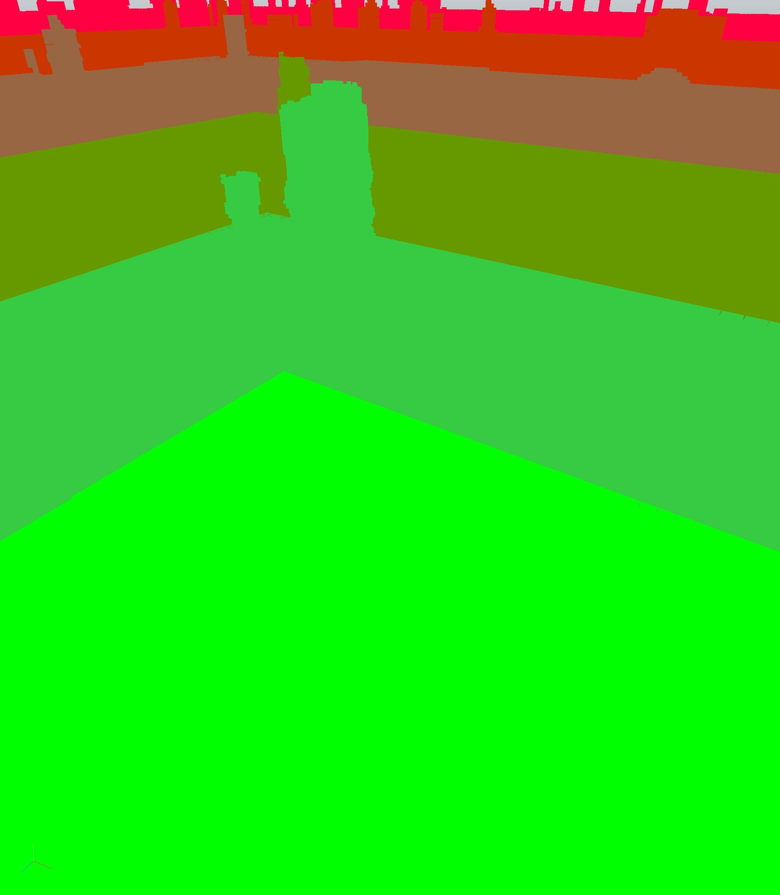

Voxler
A voxel engine for the browser, on WebGPU. A world is generated on the GPU from a WGSL function rather than stored as voxel data, so there is no level to load.

It needs WebGPU. Chrome or Edge on desktop, Safari 26 on macOS 26 or iOS 26, or Firefox on Windows or Apple Silicon. There is no WebGL fallback, so an older browser gets a message and nothing else. The forest takes a few seconds to compile its shaders on the first load.
What it does
A world is not a file. It is a WGSL program: a signed distance function plus a material function, sampled on the GPU at whatever resolution each consumer needs. Nothing is stored on disk and nothing is streamed over the network.
Close to the camera, 32-voxel chunks are voxelized on the GPU, read back, and meshed in background workers with binary greedy meshing. The quads are 8 bytes each. A compute pass culls them against the frustum and a depth pyramid, and the whole near field goes out in one indirect draw.
Farther out, where a voxel face is smaller than a pixel, it stops drawing triangles and ray-marches a brickmap clipmap in compute. View distance then costs a fixed amount of GPU time per pixel instead of growing with the number of voxels. The same clipmap is what the near field's shadow rays march, so shadows cost no shadow map and no second draw.
How large is very large
What you write is the function, and it is a few hundred lines. The voxels it describes are never stored, so no part of a world's extent is a file size. What bounds it instead is the coordinate system:
| Horizontally | 33.5 million voxels each way from the origin |
| Vertically | 32,768 voxels each way |
| Across | 67 million voxels, about 1.7 times the Earth's circumference at a voxel to the metre |
| In memory | a radius around the camera, 512 voxels by default |
| On screen | as far as the fog, 16,384 voxels in the worlds here |
The last two rows are the ones that cost anything. Memory follows the resident radius and frame time follows what is on screen; neither grows as you fly.
Where it gives out
The horizontal figure is a real edge. A chunk is addressed by a key packing its coordinates into one 53-bit number, 21 bits per horizontal axis and 11 vertical, and every path that takes a chunk coordinate checks the range first. Past it chunks stop being streamed and meshed, so you would be looking at the ray-marched far field over nothing. That is read off the code rather than flown to.
Inside the range the engine holds up, because it never puts an absolute position in a
f32: positions are an integer voxel coordinate plus a fraction, shaders
subtract the camera's chunk in integers and convert last, and noise is sampled through
integer lattices. Measured, terrain a million voxels out is smooth to a sixty-fourth of a
voxel.
What gives out first is usually the world program rather than the engine. A world that
turns its position into a plain vector with wp_f32(p) inherits float32
spacing, about 0.06 voxels at a million and coarser after that, which is enough for
geometry to jitter. The helpers that stay exact at any distance are
wp_lattice for noise, wp_repeat_near for scatter and
wp_local(p, anchor) for anything placed.

The worlds


Using it
A world is a WGSL program, and the engine is one object that takes one. There is no scene to build and no assets to load: hand it a signed distance function and a material function and you have streaming, meshing, GPU culling, a ray-marched horizon and shadows.
const voxler = await Voxler.create(canvas, { world: { code: myWorldWgsl } });
voxler.start();The get-started page has the world contract, every option, and a world small enough to read compiling and running on the page itself.
Controls
- Drag to look. WASD to move, Space and C up and down, Shift to sprint.
- The wheel flies towards whatever the cursor is over, so a thing can be approached without turning to face it. + and - change the speed.
- K starts a flyover that follows whatever is under the camera. Over a river it follows the river.
- Click a bird to pick it out. With one picked, K chases it instead.
- F2 opens the stats overlay. P switches to the ray-traced preview of the same world.
- E and Q place and remove voxels. Edits survive the chunk being regenerated.
Speed
Measured at 1080p with everything on: near field, far field, textures, baked ambient occlusion, block light, shadows and translucency. An Apple M3 holds its 60 Hz panel through both benchmark scenes without dropping a frame. An Intel Arc B390 asked for twice the frame rate keeps 120 Hz through the walk under the canopy bar 12 frames of 1425, and misses 46 of 1151 on the flyover, where the ray-marched distance is most of the frame.
Those are two machines, and neither of them is yours. The engine has a benchmark harness and the page will run it, but a run from here is not comparable to anything: GitHub Pages cannot send the headers that make a page cross-origin isolated, so the workers copy their payloads instead of sharing them. Numbers worth quoting come off a local dev server.